flowchart LR input_1[div2] input_2[div3] input_3[div5] input_4[div7] output_1[composite] output_2[prime] input_1 --> output_1 input_1 --> output_2 input_2 --> output_1 input_2 --> output_2 input_3 --> output_1 input_3 --> output_2 input_4 --> output_1 input_4 --> output_2
13: Recurrence
Session 13: Recurrence
Learning objectives:
- RNN
- LSTM
- GRU
More Neural Network Concepts
Cross Entropy
Recall, a step size in back propagation is
\[\text{step size} = \text{derivative} \cdot \text{learning rate}\]
Cross Entropy Loss
When classifying among \(C\) classes, for an array of predictions (after computing a softmax) \(\vec{s}\) and its associated vector of true observations \(\vec{y}\), the cross entropy loss is calculated as
\[L(\vec{s}, \vec{y}) = -\sum_{i=1}^{C} y_{i}\log s_{i}\]
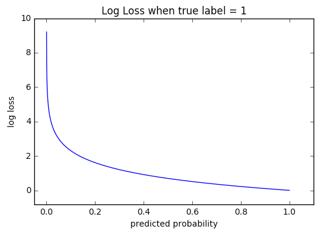
- logarithm of softmax
- larger derivative values for larger misclassification values
- larger step sizes for larger misclassification values
- image source: Machine Learning Glossary
Cross Entropy Inference
As a logarithm (a monotonic transformation) of softmax and similar to the sum-of-squared residuals (SSR), we are likewise seeking lower values of errors.
- smaller cross entropy \(\rightarrow\) better network
Math Example
We start with a sequence of natural numbers
\[\{8, 9, 10, ..., 100\}\] and we will use a neural network to try to classify the numbers as prime numbers or composite numbers. In this simple example, the inputs are indicator variables
div2: number is divisible by 2div3: number is divisible by 3div5: number is divisible by 5div7: number is divisible by 7
and our network looks like
What do you think will happen to the weights and bias values upon training the network?
After running the code for 100 epochs, the network calculations so far look like
\[Wx + b\]
\[\left[\begin{array}{rrrr} 0.92 & 0.34 & 0.79 & 0.68 \\ -0.40 & -0.45 & 0.80 & -0.36 \\ \end{array}\right] \left[\begin{array}{c} x_{1} \\ x_{2} \\ x_{3} \\ x_{4} \\ \end{array}\right] + \left[\begin{array}{c} 0.92 \\ 0.42 \\ \end{array}\right]\]
Deep Learning
Deep Learning
In our studies of artificial learning, deep learning is using multiple hidden layers.
Python Code
class NN2H(pl.LightningModule):
# Neural Network object
# assumes two hidden layers (and default learning rate: 0.01)
# inheirited class from LightningModule (for faster computations)
def __init__(self, input_layer_size, h1, h2,
output_layer_size, learning_rate = None):
super().__init__()
self.input_layer_size = input_layer_size #input layer size (number of explanatory variables)
self.h1 = h1
self.h2 = h2
self.learning_rate = learning_rate if learning_rate is not None else 0.01
self.output_layer_size = output_layer_size #output layer size: 3 (number of penguin species)
self.fc1 = nn.Linear(input_layer_size, h1)
self.fc2 = nn.Linear(h1, h2)
self.fc3 = nn.Linear(h2, output_layer_size)
self.test_step_outputs = []
def forward(self, x):
x = F.relu(self.fc1(x))
x = F.relu(self.fc2(x))
x = self.fc3(x)
return x
def training_step(self, batch, batch_idx): # what happen in each train step
x, y = batch
output = self(x)
loss = F.cross_entropy(output, y)
# self.log('train_loss', loss, on_epoch=True) # use this for logging (e.g. using TensorBoard)
return {'loss':loss}
def test_step(self, batch, batch_idx): # what happen in each test step
x, y = batch
output = self(x)
loss = F.cross_entropy(output, y)
self.test_step_outputs.append(loss)
return {'loss':loss}
def on_test_epoch_end(self):
epoch_average = torch.stack(self.test_step_outputs).mean()
self.log("test_epoch_average", epoch_average)
self.test_step_outputs.clear() # free memory
def configure_optimizers(self):
optimizer = torch.optim.SGD(self.parameters(), lr = lr)
return optimizer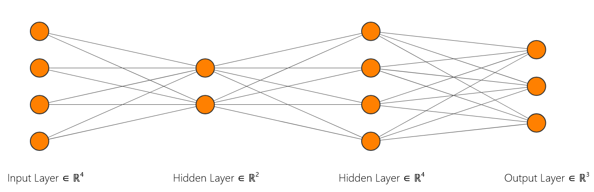
Recurrent Neural Networks
Recurrent Neural Networks
In order to move toward retaining some memory in our inputs to artificial intelligence models, we will here briefly discuss recurrent neural networks.
flowchart LR input1[input] neuron1[neuron] output1[output] input1 --> neuron1 neuron1 --> output1 neuron1 --> neuron1
As we unfold the network, we use the same weights and bias values between the layers.
Example: Crosswalk
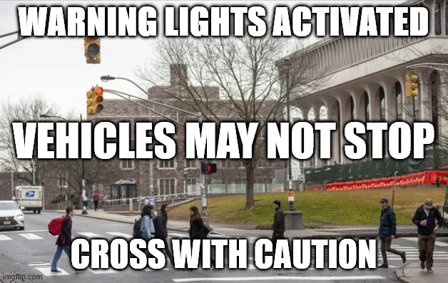
- image source: NYT
We start with a sequence that has
Warning lights activated. Vehicles may not stop. Cross with caution. Warning lights activated. Vehicles may not stop. Cross with caution. Warning lights activated. Vehicles may not stop. Cross with caution.
repeated over and over, and we hope that
- input “Warning” leads to a prediction of “lights”
- input “lights” leads to a prediction of “activated”
- input “activated” leads to a prediction of “Vehicles”
- input “Vehicles” leads to a prediction of “may”
- input “may” leads to a prediction of “stop”
- input “stop” leads to a prediction of “Cross”
- input “Cross” leads to a prediction of “with”
- input “with” leads to a prediction of “caution”
- input “caution” leads to a prediction of “Warning”
Unfolding
Warning
- Does input “Warning” lead to a prediction of “lights”?
flowchart TD input1[Warning] neuron1[ReLU] output1[lights] input1 -- 0.20x + 0.86 --> neuron1 neuron1 -- 0.91x - 0.25 --> output1
lights
- Does input “lights” leads to a prediction of “activated”?
flowchart TD input1[Warning] input2[lights] neuron1[ReLU] neuron2[ReLU] output1[NA] output2[activated] input1 -- 0.20x + 0.86 --> neuron1 input2 -- 0.20x + 0.86 --> neuron2 neuron1 -- 0.91x - 0.25 --> output1 neuron2 -- 0.91x - 0.25 --> output2 neuron1 -- -0.85x + 0.81 --> neuron2
activated
- Does input “activated” leads to a prediction of “Vehicles”?
flowchart TD input1[Warning] input2[lights] input3[activated] neuron1[ReLU] neuron2[ReLU] neuron3[ReLU] output1[NA] output2[NA] output3[Vehicles] input1 -- 0.20x + 0.86 --> neuron1 input2 -- 0.20x + 0.86 --> neuron2 input3 -- 0.20x + 0.86 --> neuron3 neuron1 -- 0.91x - 0.25 --> output1 neuron2 -- 0.91x - 0.25 --> output2 neuron3 -- 0.91x - 0.25 --> output3 neuron1 -- -0.85x + 0.81 --> neuron2 neuron2 -- -0.85x + 0.81 --> neuron3
Vehicles
- Does input “Vehicles” leads to a prediction of “may”?
flowchart TD input1[Warning] input2[lights] input3[activated] input4[Vehicles] neuron1[ReLU] neuron2[ReLU] neuron3[ReLU] neuron4[ReLU] output1[NA] output2[NA] output3[NA] output4[may] input1 -- 0.20x + 0.86 --> neuron1 input2 -- 0.20x + 0.86 --> neuron2 input3 -- 0.20x + 0.86 --> neuron3 input4 -- 0.20x + 0.86 --> neuron4 neuron1 -- 0.91x - 0.25 --> output1 neuron2 -- 0.91x - 0.25 --> output2 neuron3 -- 0.91x - 0.25 --> output3 neuron4 -- 0.91x - 0.25 --> output4 neuron1 -- -0.85x + 0.81 --> neuron2 neuron2 -- -0.85x + 0.81 --> neuron3 neuron3 -- -0.85x + 0.81 --> neuron4
may
- Does input “may” leads to a prediction of “not”?
flowchart TD input1[Warning] input2[lights] input3[activated] input4[Vehicles] input5[may] neuron1[ReLU] neuron2[ReLU] neuron3[ReLU] neuron4[ReLU] neuron5[ReLU] output1[NA] output2[NA] output3[NA] output4[NA] output5[not] input1 -- 0.20x + 0.86 --> neuron1 input2 -- 0.20x + 0.86 --> neuron2 input3 -- 0.20x + 0.86 --> neuron3 input4 -- 0.20x + 0.86 --> neuron4 input5 -- 0.20x + 0.86 --> neuron5 neuron1 -- 0.91x - 0.25 --> output1 neuron2 -- 0.91x - 0.25 --> output2 neuron3 -- 0.91x - 0.25 --> output3 neuron4 -- 0.91x - 0.25 --> output4 neuron5 -- 0.91x - 0.25 --> output5 neuron1 -- -0.85x + 0.81 --> neuron2 neuron2 -- -0.85x + 0.81 --> neuron3 neuron3 -- -0.85x + 0.81 --> neuron4 neuron4 -- -0.85x + 0.81 --> neuron5
not
- Does input “not” leads to a prediction of “stop”?
flowchart TD input1[Warning] input2[lights] input3[activate] input4[Vehicles] input5[may] input6[not] neuron1[ReLU] neuron2[ReLU] neuron3[ReLU] neuron4[ReLU] neuron5[ReLU] neuron6[ReLU] output1[NA] output2[NA] output3[NA] output4[NA] output5[NA] output6[stop] input1 -- 0.20x + 0.86 --> neuron1 input2 -- 0.20x + 0.86 --> neuron2 input3 -- 0.20x + 0.86 --> neuron3 input4 -- 0.20x + 0.86 --> neuron4 input5 -- 0.20x + 0.86 --> neuron5 input6 -- 0.20x + 0.86 --> neuron6 neuron1 -- 0.91x - 0.25 --> output1 neuron2 -- 0.91x - 0.25 --> output2 neuron3 -- 0.91x - 0.25 --> output3 neuron4 -- 0.91x - 0.25 --> output4 neuron5 -- 0.91x - 0.25 --> output5 neuron6 -- 0.91x - 0.25 --> output6 neuron1 -- -0.85x + 0.81 --> neuron2 neuron2 -- -0.85x + 0.81 --> neuron3 neuron3 -- -0.85x + 0.81 --> neuron4 neuron4 -- -0.85x + 0.81 --> neuron5 neuron5 -- -0.85x + 0.81 --> neuron6
Vanishing Gradients
In our recurrent neural network with
- input layer size: 1
- hidden layer size: 1
- output layer size: 1
flowchart LR input1[input] neuron1[neuron] output1[output] input1 -- w_i,h + b_i,h --> neuron1 neuron1 -- w_h,0 + b_h,0 --> output1 neuron1 -- w_h,h + b_h,h --> neuron1
we have functions
- \(L_{i,h} = w_{i,h}x + b_{i,h}\)
- \(L_{h,o} = w_{h,o}x + b_{h,o}\)
- \(L_{h,h} = w_{h,h}x + b_{h,h}\)
and ReLU activation function
\[\text{ReLU}(x) = \text{max}(x,0)\] whose derivative is
\[\frac{d\text{ReLU}}{dx} = \begin{cases} 1, & x \geq 0 \\ 0, & x < 0 \end{cases}\]
Chain Rule
Toward back propagation, the derivative based on output \(k\) given inputs \(\{1, 2, ..., k\}\) is
\[\begin{array}{rcl} \frac{\partial\text{SSR}}{\partial x_{k}} & = & \displaystyle\sum_{a = 1}^{k} \frac{\partial\text{SSR}}{\partial L_{h,o}} \left(\displaystyle\prod_{b=1}^{a-1} \frac{\partial L_{h,o}}{\partial\text{ReLU}}\cdot \frac{\partial\text{ReLU}}{\partial L_{h,h}}\cdot \frac{\partial L_{h,h}}{L_{i,h}} \right) \frac{\partial L_{i,h}}{\partial x_{k}} \\ ~ & = & \displaystyle\sum_{a = 1}^{k} w_{i,h} \left(\displaystyle\prod_{b=1}^{a-1} w_{h,h}\right) w_{h,0} \\ \end{array}\]
Gradient Propagation
For today’s example, the derivative is
\[\frac{\partial\text{SSR}}{\partial x_{k}} = \sum_{a = 1}^{k} (0.20) \left(\prod_{b=1}^{a-1} (-0.85) \right) (0.91)\]
Let us quickly recall some math
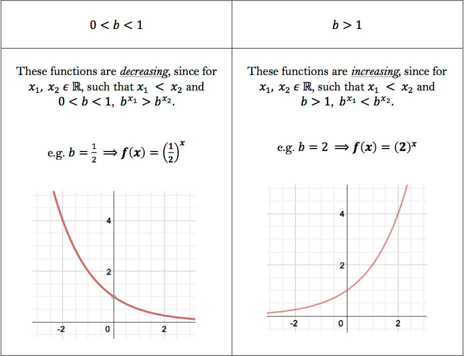
- image source: University of Toronto
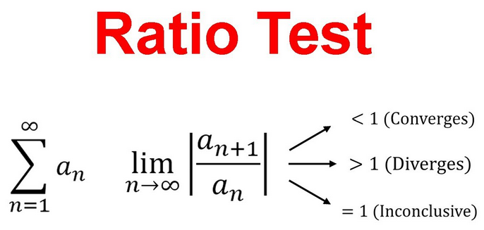
- image source: Dan the Tutor
Gradient Propagation
- we have vanishing gradients if \(|w_{h,h}| < 1\)
- we have exploding gradients if \(|w_{h,h}| > 1\)
In the above hypothetical example, since \[|w_{h,h}| = |-0.85| < 1\] our model may be limited (forgetful) due to vanishing gradients.
Preview: Word Prediction
flowchart LR input1[eggs] input2[bread] stem1[pairs] stem2[well] stem3[with] output1[bacon] output2[butter] input1 --> stem1 input2 --> stem1 stem1 --> stem2 stem2 --> stem3 stem3 --> output1 stem3 --> output2
“eggs pairs well with bacon”
“bread pairs well with butter”
but how to represent words as numbers?
- later: sessions about NLP (natural language programming)
Main Example: First Names
We will be exploring the Pytorch RNN tutorial by Sean Robertson.
- over 20,000 first names
- associated with 18 languages
- Arabic
- Chinese
- Czech
- Dutch
- English
- French
- German
- Greek
- Irish
- Italian
- Japanese
- Korean
- Polish
- Portuguese
- Russian
- Scottish
- Spanish
- Vietnamese
For example, the Polish names are
Adamczak Adamczyk Andrysiak Auttenberg Bartosz Bernard Bobienski Bosko Broż Brzezicki Budny Bukoski Bukowski Chlebek Chmiel Czajka Czajkowski Dubanowski Dubicki Dunajski Dziedzic Fabian Filipek Filipowski Gajos Gniewek Gomolka Gomulka Gorecki Górka Górski Grzeskiewicz Gwozdek Jagoda Janda Janowski Jaskolski Jaskulski Jedynak Jelen Jez Jordan Kaczka Kaluza Kamiński Kasprzak Kava Kedzierski Kijek Klimek Kosmatka Kowalczyk Kowalski Koziol Kozlow Kozlowski Krakowski Król Kumiega Lawniczak Lis Majewski Malinowski Maly Marek Marszałek Maslanka Mencher Miazga Michel Mikolajczak Mozdzierz Niemczyk Niemec Nosek Nowak Pakulski Pasternack Pasternak Paszek Piatek Piontek Pokorny Poplawski Róg Rudaski Rudawski Rusnak Rutkowski Sadowski Salomon Serafin Sienkiewicz Sierzant Sitko Skala Slaski Ślązak Ślusarczyk Ślusarski Smolák Sniegowski Sobol Sokal Sokolof Sokoloff Sokolofsky Sokolowski Sokolsky Sówka Stanek Starek Stawski Stolarz Szczepanski Szewc Szwarc Szweda Szwedko Walentowicz Warszawski Wawrzaszek Wiater Winograd Winogrodzki Wojda Wojewódka Wojewódzki Wronski Wyrick Wyrzyk Zabek Zawisza Zdunowski Zdunowski Zielinski Ziemniak Zientek Żuraw
DCP 1
AI Frameworks
Keras
- Francois Chollet
- March 2015
- Greek for “horn”
- supports TensorFlow, JAX, PyTorch
PyTorch
- Meta AI
- Sept 2016
- tensors intrinsic data type
- automatic differentiation
Pytorch Lightning
- William Falcon
- May 2019
LSTMs
- Hochreiter and Schmidhuber, 1997
- addressing vanishing/exploding gradients
- novel architecture
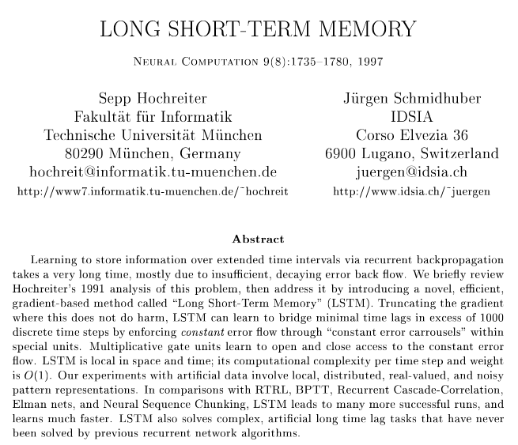
- CEC: constant error carrousel
- cuts off memory leakage
- protection against irrelevant inputs
Each module of a Long Short Term Memory (LSTM) network has
- 3 inputs: data input, long-term memory (aka forget gate), short-term memory (aka output gate)
and outputs new values for the forget gate and the output gate

- image source: Chris Olah
applied LSTMs on
- sequences of words
- sequences of numbers
- noisy sequences
- math function values
- temporal sequences
DCP 2
GRUs
GRU
Each module of a Gated Recurrent Unit (GRU) network has
- 2 inputs: data input, long-term memory (aka forget gate)
and outputs a new value for the forget gate along with the data prediction. Hence, the GRU architecture is simpler than an LSTM, but can produce similar results.
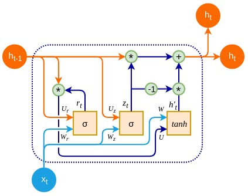
- image source: O’Reilly
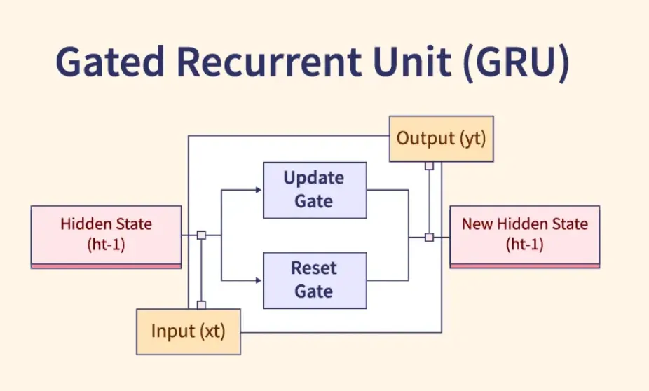
- image source: Harshed Abdulla
Long-term memory
Both LSTM and GRU architectures allow for processing of sequences of data while avoiding the vanishing gradient problem.

DCP 3
Data Ethics: Traveler Biomarkers
Europe’s Schengen Area is unrolling tech to collect biomarker information about incoming travelers.
- image source: Getty Images
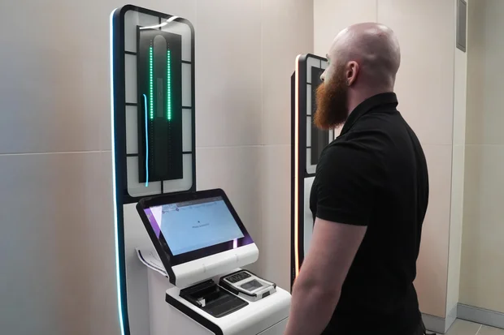
- image source: Getty Images
started Oct 12, 2025
six-month roll out
- start: Croatia, Spain
data storage: 3 years
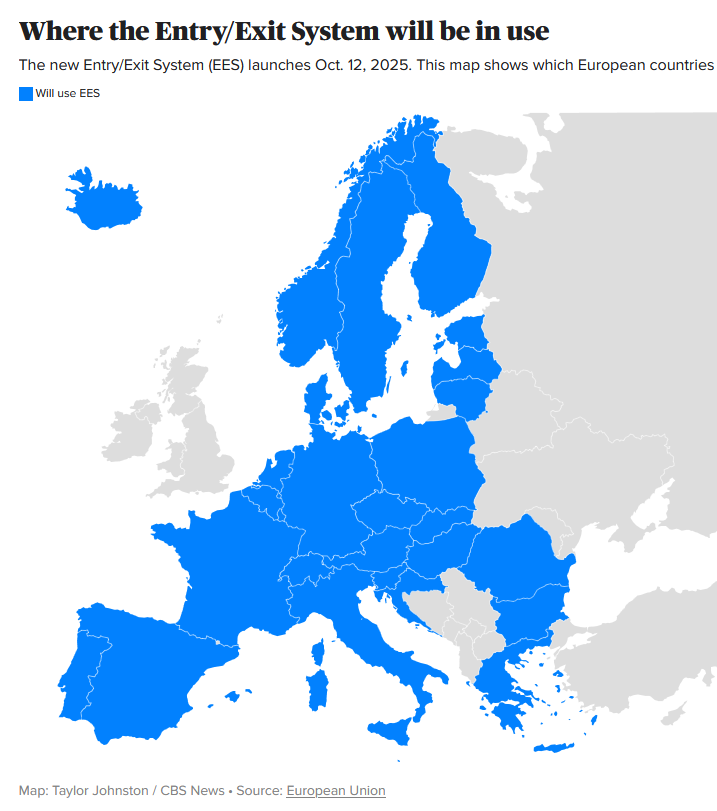
- image source: CBS News
DCP 4
Semester Projects
For SML 301, students will complete a substantial machine learning project
- exploration of large data set
- neural network tuning
- machine learning modeling
- video presentation
- research poster/slides
You (and your group) may select one of the following project ideas
- or you may propose your own project
TRAIL Microcard Collection
- “Imaged from microcard, these technical reports describe research performed for U.S. government agencies from the 1930s to the 1960s. The reports were provided by the Technical Report Archive and Image Library (TRAIL).”
- semi-supervised learning (clustering with some labels)
- classification task: trying to organize scanned images to help a government organization
- scope: convolutional neural networks, maybe OCR, maybe NLP
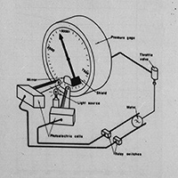
Meso-American Migration Project
- “The MMP’s main focus is to gather social as well as economic information on Mexican and Central American migration to the United States. It is a unique source of data that enables researchers to track patterns and processes of migration, immigrant integration, and the consequences of migration for households and communities in places of origin.”
- creative wrangling of target and input variabes
- scope: applying artificial intelligence methods to a social science data set
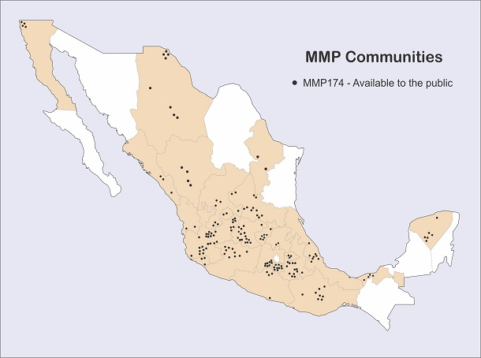
Yelp Open Dataset
“The Yelp Open Dataset is a subset of Yelp data that is intended for educational use. It provides real-world data related to businesses including reviews, photos, check-ins, and attributes like hours, parking availability, and ambience.”
- working with about 9 GB of data
- predicting consumer ratings
- scope: neural networks and several machine learning methods
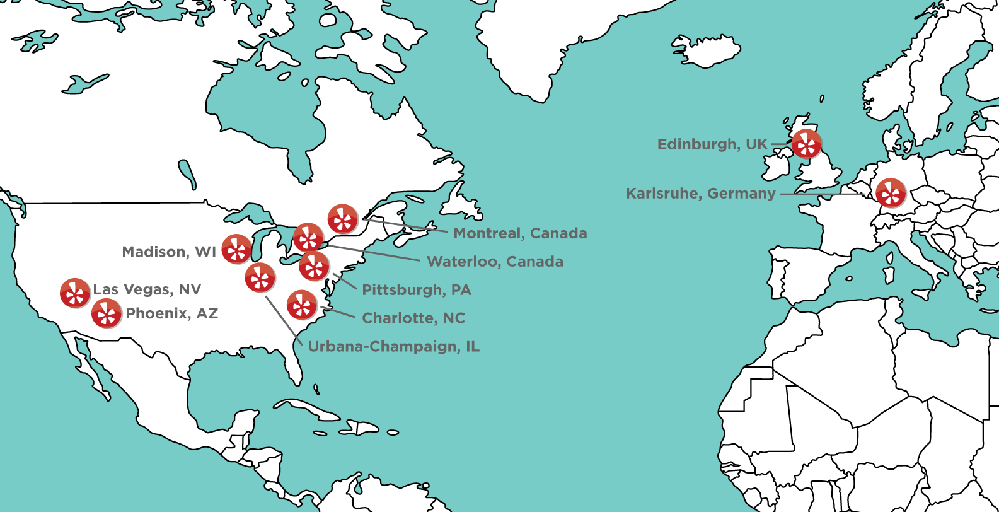
NYC Taxi
“datasets were collected and provided to the NYC Taxi and Limousine Commission (TLC) by technology providers authorized under the Taxicab & Livery Passenger Enhancement Programs (TPEP/LPEP)”
working with parquet files and temporal data
scope: neural networks and several machine learning methods
Standardized
Derek will fine-tune and standardize the project instructions so that each path has roughly the same difficulty and amount of work
Quo Vadimus?
due this Friday (October 24):
- Poster Feedback (2 hours)
- Precept 6 (1 hour)
- Project Proposal (survey)
- On Lit Reviews (survey)
- Prompt 3 (or Ed Discussion):
Have there been confusing concepts in our SML 301 course? Let Derek know!
Footnotes
(optional) Additional Resources and References
- derivation of the derivative of cross entropy by Shivam Mehta
Session Info
sessionInfo()R version 4.5.1 (2025-06-13 ucrt)
Platform: x86_64-w64-mingw32/x64
Running under: Windows 10 x64 (build 19045)
Matrix products: default
LAPACK version 3.12.1
locale:
[1] LC_COLLATE=English_United States.utf8
[2] LC_CTYPE=English_United States.utf8
[3] LC_MONETARY=English_United States.utf8
[4] LC_NUMERIC=C
[5] LC_TIME=English_United States.utf8
time zone: America/New_York
tzcode source: internal
attached base packages:
[1] stats graphics grDevices utils datasets methods base
other attached packages:
[1] lubridate_1.9.4 forcats_1.0.0 stringr_1.5.1
[4] dplyr_1.1.4 purrr_1.1.0 readr_2.1.5
[7] tidyr_1.3.1 tibble_3.3.0 ggplot2_4.0.0
[10] tidyverse_2.0.0 patchwork_1.3.1 palmerpenguins_0.1.1
loaded via a namespace (and not attached):
[1] Matrix_1.7-3 gtable_0.3.6 jsonlite_2.0.0 compiler_4.5.1
[5] Rcpp_1.1.0 tidyselect_1.2.1 png_0.1-8 scales_1.4.0
[9] yaml_2.3.10 fastmap_1.2.0 lattice_0.22-7 reticulate_1.43.0
[13] R6_2.6.1 generics_0.1.4 knitr_1.50 htmlwidgets_1.6.4
[17] pillar_1.11.0 RColorBrewer_1.1-3 tzdb_0.5.0 rlang_1.1.6
[21] stringi_1.8.7 xfun_0.52 S7_0.2.0 timechange_0.3.0
[25] cli_3.6.5 withr_3.0.2 magrittr_2.0.3 digest_0.6.37
[29] grid_4.5.1 rstudioapi_0.17.1 hms_1.1.3 lifecycle_1.0.4
[33] vctrs_0.6.5 evaluate_1.0.4 glue_1.8.0 farver_2.1.2
[37] rmarkdown_2.29 tools_4.5.1 pkgconfig_2.0.3 htmltools_0.5.8.1